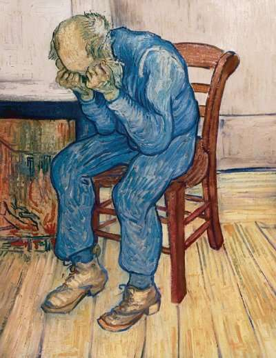
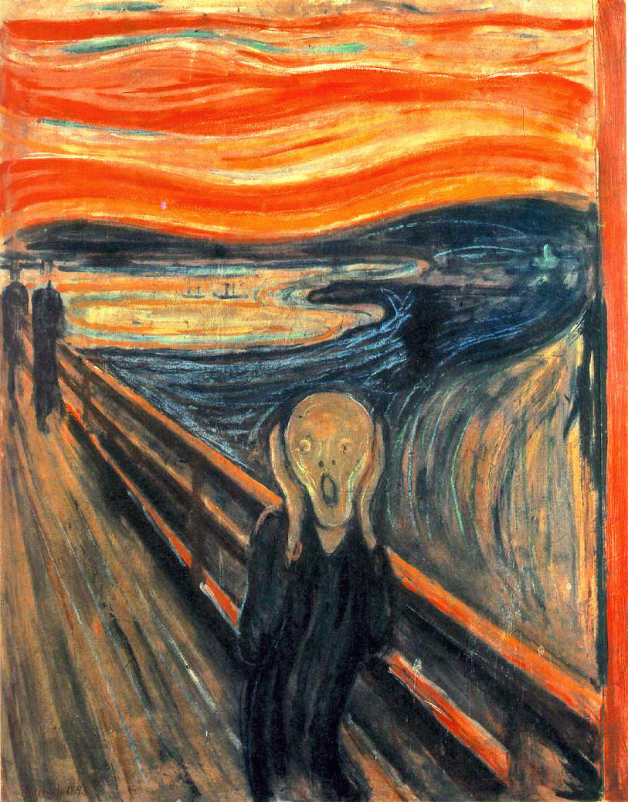

Surgimento
Em oposição ao Impressionismo, o Expressionismo surge no final do século XIX com características que ressaltam a subjetividade. Neste movimento, a intenção do artista é de recriar o mundo e não apenas a de absorvê-lo da mesma forma que é visto. Aqui ele se opõe à objetividade da imagem, destacando, em contrapartida, o subjetivismo da expressão.
Expressionismo no Brasil
Em nosso país o movimento também foi importante. Podemos destacar, nas artes plásticas, os artistas expressionistas mais importantes: Candido Portinari, que retratou em suas telas a migração do povo nordestino para as grandes cidades e a vida dos agricultores, operários e desfavorecidos.
Representantes do expressionismo Brasileiro
- Anita Malfatti - pode ser considerada a artista que introduziu as vanguardas europeias em território brasileiro. Retratou em suas obras retratos nus, cenas populares cotidianas e paisagens. Usou cores fortes e violentas em suas obras.
- Lasar Segall - é considerado o primeiro artista a introduzir o expressionismo alemão em território sul-americano. Uma de suas obras mais conhecidas é "Emigrante Navio" de 1939.
Questões do enem
Questão 1
“Alguns trabalhos meus se aproximam do expressionismo. Quando se diz expressionismo, a referencia é o expressionismo alemão, a grande sala onde essa linguagem se tornou universalmente conhecida.”
A afirmação do artista e a comparação das gravuras acima, nos permitem perceber
A) a mesma estética, as duas obras são gravuras, onde a figura humana aparece em primeiro plano e o fundo é uma composição caótica e abstrata.
B) que a semelhança entre elas está em uma poética individual onde o artista se desgarra do coletivo e cria imagens densas que prendem o olhar do observador..
C) a relação entre elas está na composição caótica e na técnica, mas uma trata da expressão dos sentimentos do artista e a outra é uma representação do cotidiano.
D) a ausência das cores, para destacar as linhas fortemente marcadas nas composições, dessa forma são construídas obras de grande impacto emocional.
E) que a figura humana não apresenta linhas reais, mas demonstra a emoção dos artistas. As linhas próprias e a ausência de cores são características do expressionismo.
Algumas obras
vincent van gogh
Edvard Munch
